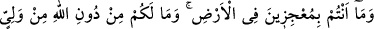
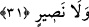
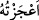
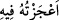

Bununla beraber Allah, hatâlarınızın “çoğunu affeder”, bunlara karşı sizi
cezâlandırmaz. Şâyet Allah affedip görmezden gelmeseydi yeryüzünde hiçbir canlı
kalmazdı.
Bu âyet-i kerîmede musîbete uğrayan kulların gönüllerine bir teselli vardır. Şöyle ki:
Şâyet size ebedî ve uhrevî azâbı gerektiren isyân ve günah musîbeti isâbet etmişse; biz
size fâni ve dünyevî bir musîbet isâbet ettirmekle onu telâfi ederiz. Bu durum, sizden
meydana gelen edeb dışı hallerin bir cezası olmuş mâsiyetler sebebiyle meydana gelen
kirlenme temizlenmiş olur. Sonra sebepleri çoğalıp belâlar peşpeşe inmeye başlayınca
kul, başına gelenleri anlamak için yapmakta olduğu kötü işlerini düşünsün. Yaptıklarının
çoğu affedilmesine rağmen bu musîbetlerin cezâsının bu noktaya nasıl ulaştığının bir
muhâsebesini yapsın! Şüphesiz böyle bir düşünceyle kulun hüznü, üzüntüsü, hayâ ve
utanması artar. Artık bu kul, günah ve isyanlarının çokluğunu, Rabbinin son derece lutuf
ve kerem sâhibi olduğunu, Yüce Allah’ın af ve mağfiretini daha iyi bilir.
Ebû Süleyman Dârânî (k.s.) hazretlerine: “Bu akl-i selîm sâhibi âlim insanlar neden
kendilerine kötü muâmele edenleri kınamayıp sitem etmezler?” diye soruldu. O da:
“Çünkü onlar, dûçâr oldukları bu kötü muâmelelerin kendi günahları sebebiyle olduğunu
bilirler” deyip bu âyeti okumuştur.
31. Yeryüzünde O’(nun cezâsı)na engel olamazsınız. Allah’tan başka bir
dostunuz ve bir yardımcınız da yoktur.
“Yeryüzünde O(nun cezâsı)na engel olamaz,” yerin her bir köşesinden kaçıp
kurtulmaya çalışsanız bile Allah’ın sizin için takdir ettiği musîbetlerden
kurtulamaz“sınız.” Allah Teâlâ sizi imtihân edip cezâlandırmak istediği zaman, nerede
olursanız olun O’ndan kurtulamaz, O’nu geçemez ve O’nun sizi cezâlandırmasına engel
olamazsınız. Zîrâ Allah’ı bir işi yerine getirme ya da hak eden kimseye azap verme
konusunda âciz bırakacak kimse yoktur.
Dil âlimleri şöyle demişlerdir: “
/a’ceztühû” onu âciz bıraktım; “
/a’ceztühû fîhi” bu hususta onu geçtim, demektir.
Münâsebât tefsirinde şöyle denmiştir: Ölüm dışındaki cezâlandırmalarda sanki kişi
Allah’ın âciz olduğunu zannedebilir. Bunun için Allah Teâlâ: “Ey Araplar ve diğerleri!
Allah sizin hepinizi tamamen helak ve imha etmeyi istese siz yeryüzünde Allah’ı
âciz bırakamaz ve bu cezadan her ne olursa olsun sizin için murâd ettiği şeyden
asla kurtulamazsınız” buyurmuştur.
Sizin “Allah’tan başka” işlerinizi üstlenip musîbetlerden koruyacak “bir dostunuz
ve” bu musîbetleri bertaraf edecek “bir yardımcınız da yoktur.” Hepiniz bir araya